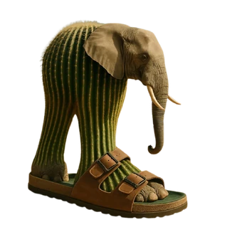

What is Italian brainrot?



In the realm of Italian Brainrot, "strength" represents chaotic dominance rather than mere physical prowess, and Bombardiro Crocodilo consistently claims the ultimate throne. This extraordinary fusion of crocodilian ferocity and military aircraft engineering—complete with aerodynamic wings, explosive missile systems, and an untamed personality—perfectly captures the essence of exaggerated power through the most ridiculous and entertaining lens imaginable. His peculiar combination of raw aggression and comedic absurdity has established him as an undisputed champion among dedicated brainrot followers. More info